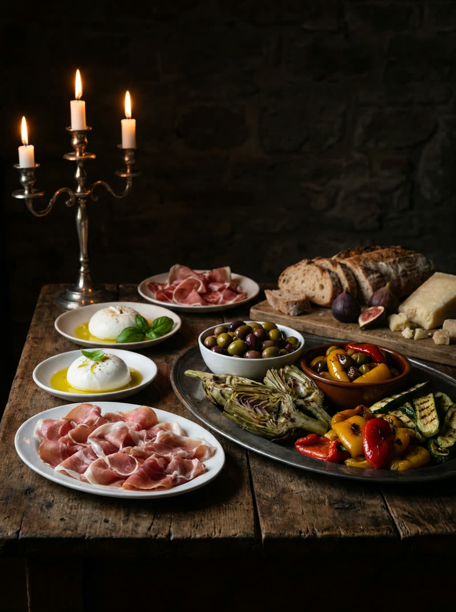
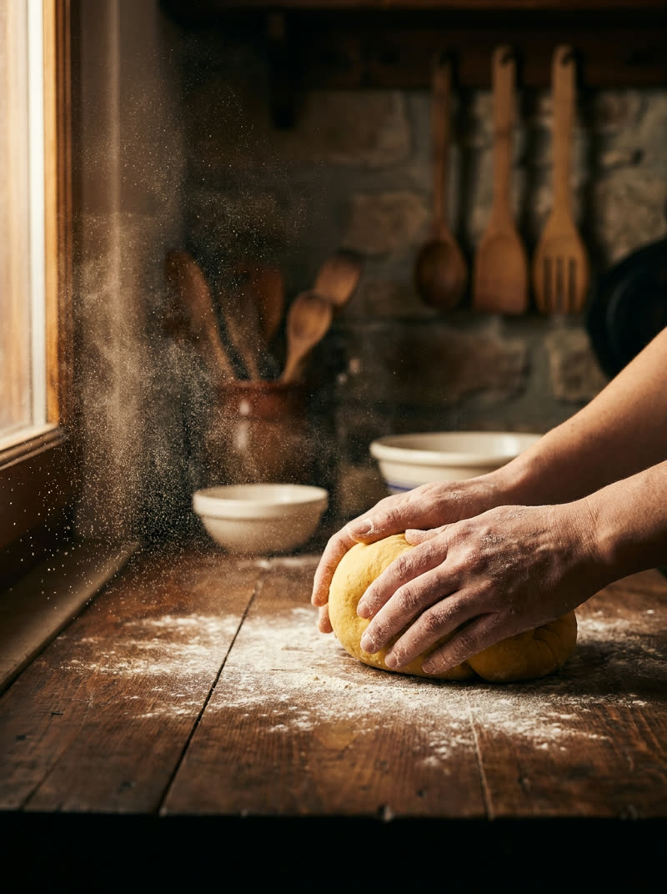
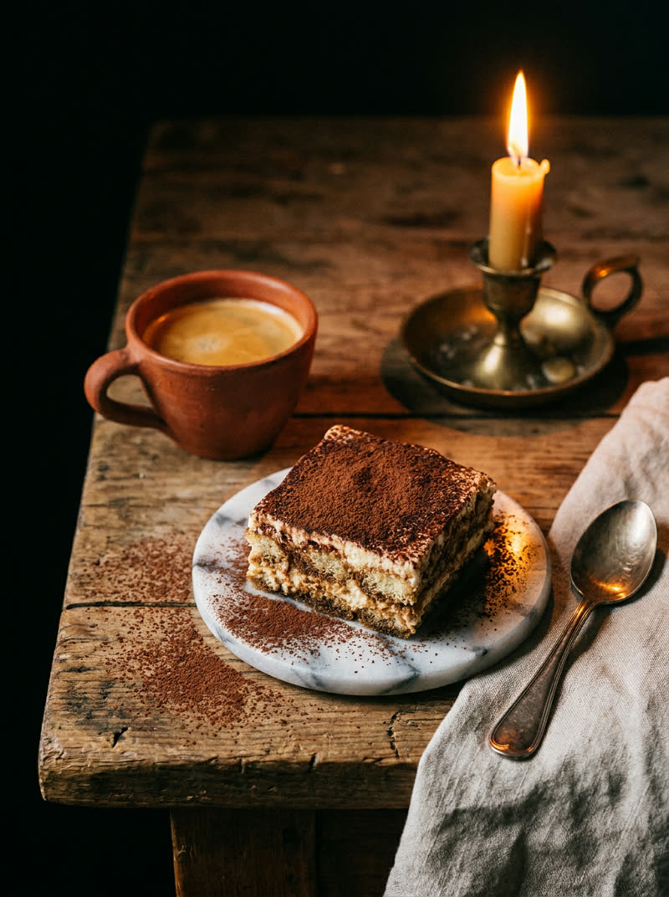

( LA PASTA )
Pasta fresca
Pétrie le matin, servie le midi. La carte est courte parce que tout est fait maison — et change avec les saisons.
( APERÇU ) — créé par Scarsellato pour Antichi Sapori · plats et prix = exemples fictifs · visuels générés par IA.
( 01 ) — OUVERTURE
ANTICHI SAPORI · DIFFERDANGE · RÉSERVATION CONFIRMÉE RAPIDEMENT (aperçu)
( LA TAVOLA ) — la table se dresse.
( 02 ) — LA CUCINA
( LA PASTA )
Pétrie le matin, servie le midi. La carte est courte parce que tout est fait maison — et change avec les saisons.
( LA TAVOLA )
Réservez en deux minutes, recevez la confirmation rapidement. Vos préférences — table, allergies, occasion — sont notées une fois pour toutes.
( LA CANTINA )
Une cave courte et choisie, du nord au sud. Demandez un accord — la maison conseille sans chichi, au verre ou à la bouteille.
( 03 ) — LA CARTA

ANTIPASTI16 € (fictif)

PRIMI19 € (fictif)

DOLCI9 € (fictif)
( 04 ) — IL MENU
( ANTIPASTI )
La burrata arrive entière, le prosciutto se coupe au moment. La table se couvre, les assiettes se croisent — c'est comme ça que ça commence, chez nous.
16 € (fictif)
( PRIMI )
Les tagliatelles du jour, le ragù qui a mijoté depuis le matin. Le genre de plat qui part vite — la carte est courte exprès, pour que rien n'attende.
19 € (fictif)
( DOLCI )
Le tiramisù de la maison, un espresso serré, et personne ne regarde l'heure. La table reste à vous — le dessert n'est pas une sortie, c'est un chapitre.
9 € (fictif)
( 05 ) — L'OSPITE
« On a réservé pour quatre, un mercredi soir. La confirmation est arrivée en dix minutes — avec notre table préférée déjà notée. »
Chaque réservation — formulaire, e-mail ou téléphone — reçoit une vraie confirmation qui reprend votre demande : le jour, l'heure, le nombre de couverts, l'occasion. Pas d'accusé de réception automatique qui ne dit rien.
Si vous ne répondez pas, nous revenons vers vous — jamais plus de trois fois, et un simple « stop » suffit pour ne plus rien recevoir.
( 06 ) — PRENOTARE
( COORDONNÉES )
Antichi SaporiMidi & soir — le formulaire, lui, répond aussi quand la cuisine est fermée.
( CONFIRMATION RAPIDE ) ( IT · FR ) ( PRÉFÉRENCES NOTÉES ) ( « STOP » RESPECTÉ )
( ASSISTANT DÉMO )
Bonsoir ! Réponses préenregistrées — aucune donnée n'est envoyée ni conservée. Choisissez une question :